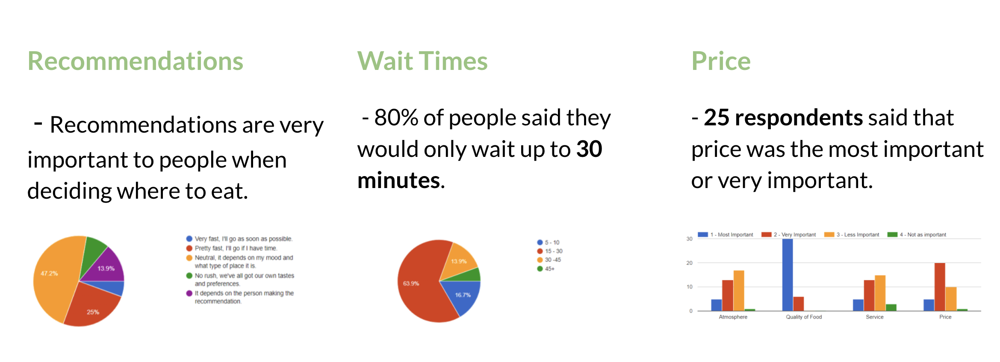

Crave is an application that takes in your food preferences and habits to
give you pre-generated suggestions on where to eat as well as recommendations
from your friends who also use the app. The more you use it, the better it gets
at predicting where you would like to eat.
Our design team got to our problem statement by conducting several interviews and sending out
a survey about what people look for and prioritize when looking for restaurants.
Below are the results we gathered from the survey and here is a link to the notes from the interviews we conducted.

From the results of the study, design documents were created to guide the process.
User Persona
Story Board
Journey Map
Lofi WireFrames
User testing yielded some great results.
We learned how important filters are to people for food types based on beliefs
as well as more information about what people get excited about when comes to food recommendations.
These tests greatly informed how we proceeded with the next set of wireframes.
These UX tests and iterations on our paper prototype lead us in our creation of our HiFi Prototype
and helped establish some primary user flows.